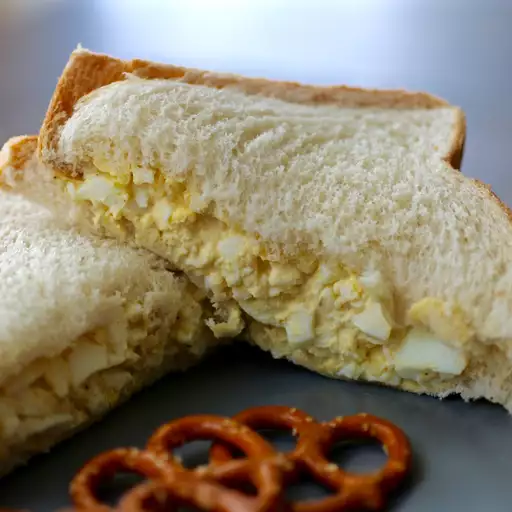

Egg Salad

Description
This egg salad recipe is tasty and easy to make with chopped boiled eggs, mayonnaise, mustard, and green onions for some color and crunch! It tastes wonderful as a sandwich and is really good on rye bread.
Ingredients
- 8 large eggs
- 1/2 cup mayonnaise
- 1/4 cup chopped green onion
- 1 teaspoon prepared yellow mustard
- 1/4 teaspoon paprika
- salt and pepper to taste
Steps
- Place eggs in a saucepan and cover with cold water. Bring to a boil and immediately remove from heat. Cover and let eggs stand in hot water for 10-12 minutes. Remove from hot water, cool, peel, and chop.
- Place chopped eggs into a bowl. Stir in mayonnaise, green onions, and mustard. Season with paprika, salt, and pepper. Stir and serve on your favorite bread, crackers, or salad greens.